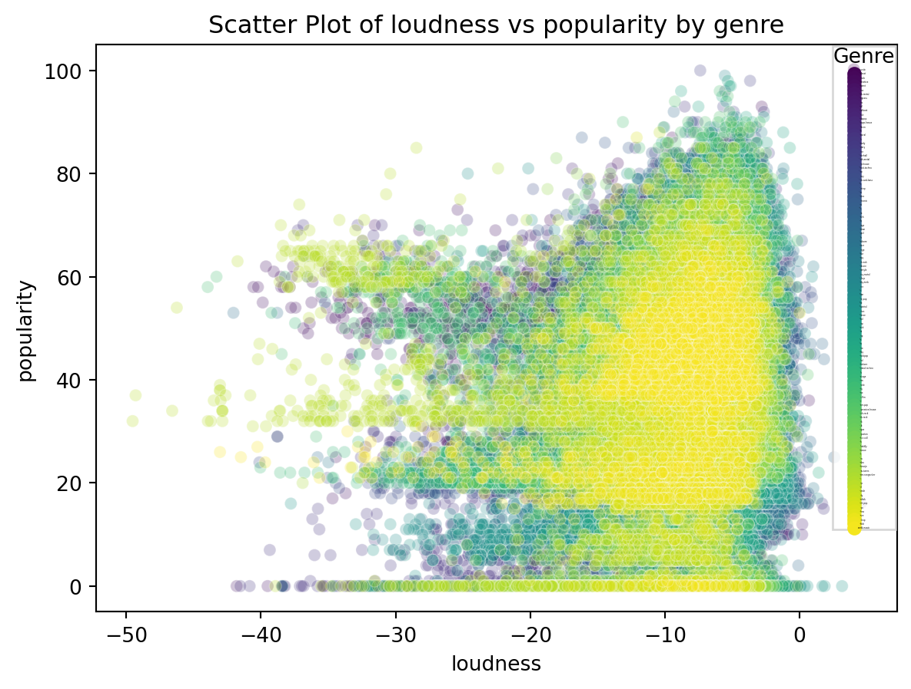
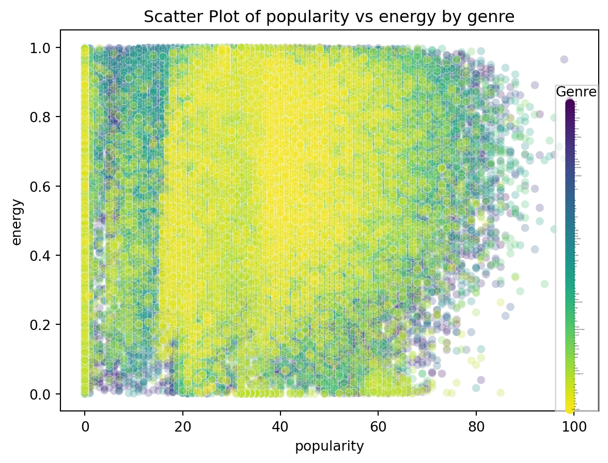
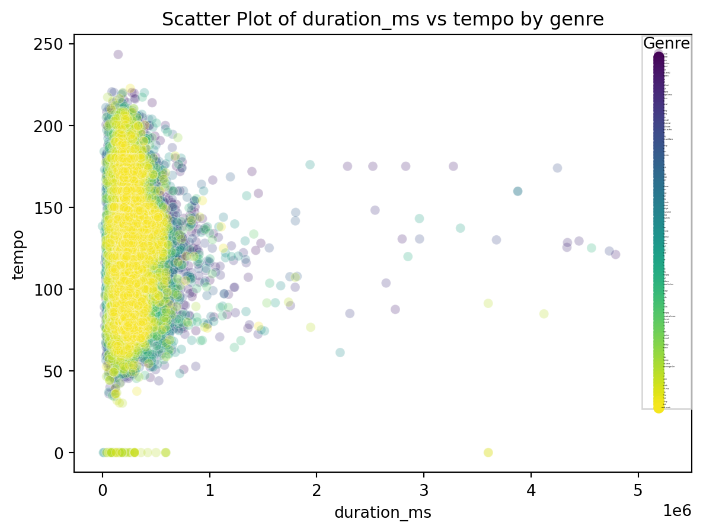
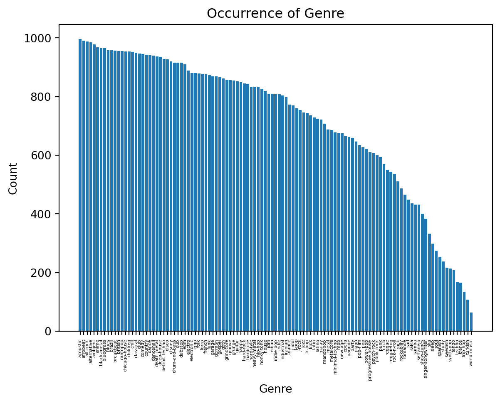
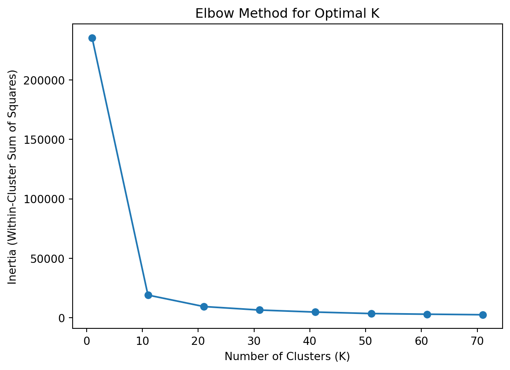
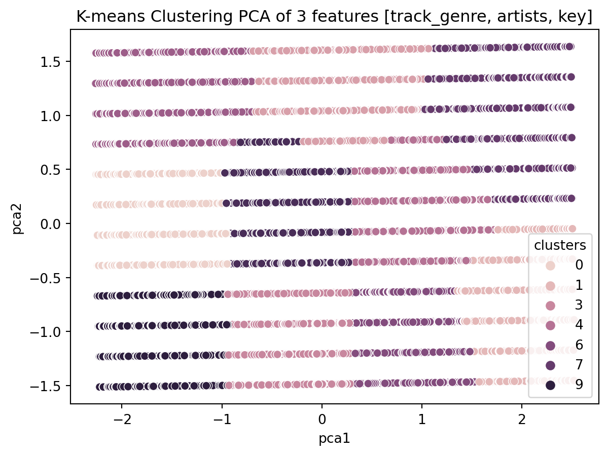
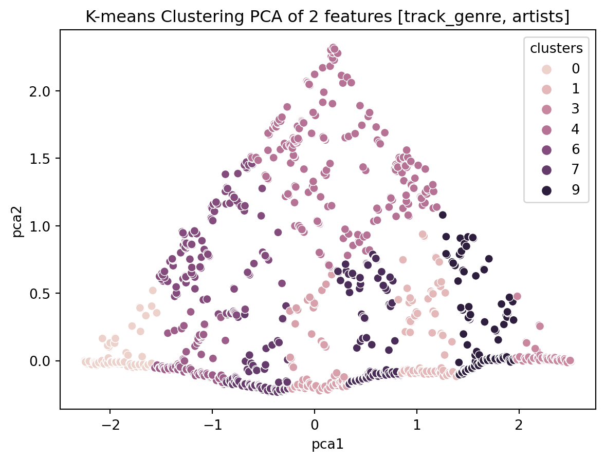

```{python}
import pandas as pd
import numpy as np
import seaborn as sns
import matplotlib.pyplot as plt
from sklearn.cluster import KMeans, DBSCAN
from sklearn.model_selection import train_test_split, ParameterGrid
from sklearn.decomposition import PCA
from sklearn.preprocessing import StandardScaler
from sklearn.metrics import silhouette_score
```Author: Daniel Hassler
Data Analysis
Clustering algorithms can be applied to many real-world applications, including but not limited to security, anomaly detection, document clustering, stock market analysis, image compression, and so much more. The application I decided to approach with clustering is a song recommendation system. I found a dataset on Kaggle containing almost 114,000 songs from the popular music streaming platform Spotify. Each entry in the dataset consists of many features including artists, track_name, track_genre, popularity, danceability, and many more.
Before I dive into the visualizaitons, I first dropped duplicates in the dataset to minimize problems with recommendations. Now, below are some visualizations showcasing certain features in a scatterplot. This gives me a rough idea what the dataset looks like with all of these features and genres.
```{python}
original_df = pd.read_csv("./dataset-dedup.csv")
print(original_df.columns)
# original_df = original_df.drop_duplicates(subset=["artists", "track_name"], keep="first").reset_index()
print(original_df.shape)
# original_df.to_csv("./dataset-dedup.csv")
features_x = ["loudness", "popularity", "duration_ms"]
features_y = ["popularity", "energy", "tempo"]
for i, (x,y) in enumerate(zip(features_x, features_y)):
scatter = sns.scatterplot(x=x, y=y, hue='track_genre', data=original_df, palette="viridis", alpha=0.25)
legend_labels = original_df['track_genre'].unique()# [:3] # Show only the first 3 genres
scatter.legend(title='Genre', labels=legend_labels, prop={'size': 1})
plt.title(f"Scatter Plot of {x} vs {y} by genre")
plt.show()
plt.show()
```Index(['Unnamed: 0.1', 'index', 'Unnamed: 0', 'track_id', 'artists',
'album_name', 'track_name', 'popularity', 'duration_ms', 'explicit',
'danceability', 'energy', 'key', 'loudness', 'mode', 'speechiness',
'acousticness', 'instrumentalness', 'liveness', 'valence', 'tempo',
'time_signature', 'track_genre'],
dtype='object')
(81344, 23)


```{python}
unique_vals = original_df['track_genre'].unique()
plt.bar(unique_vals, original_df['track_genre'].value_counts())
plt.title("Occurrence of Genre")
plt.ylabel("Count")
plt.xlabel("Genre")
_ = plt.xticks(rotation="vertical", fontsize=4)
```
Because a lot of these continuous variables: loudness, popularity, duration_ms overlap by genre significantly, I decided to drop these features during training, as well as many other features like energy, danceability, acousticness, as these metrics are too complex, overlapping, and even subjective. As a Spotify consumer myself, I like when Spotify gives me songs related to the current artist I’m listening to, so I thought important features in this dataset included: artists, track_genre, minimally. Although, I did try other features like key, and tempo on top of that.
K-Means
The K-Means algorithm clusters data by minimizing a criteria known as intertia, the within-cluster sum-of-squares. The formula for inertia, specified in the K-means documentation for Sklearn, is noted below:
Noting some of the variables in the summation: n is the number of datapoints, mu is the mean of the cluster, also the cluster_centroid of the cluster C, ||x_i - \mu||^2 represents the squared euclidean distance between point x_i and the centroid, and min() takes the min of the calculation
\[ \sum_{i=0}^{n}\min_{\mu_j \in C}(||x_i - \mu_j||^2) \]
It is worth noting that the inertia method has some drawbacks. According to Sklearn, intertia makes the assumption that clusters are convex and isotropic, which may not always be the case. The documentation also states that inertia isn’t a “normalized metric”, so running PCA (principal component analysis) before the K-means clustering is beneficial (which is exactly what I did in later steps).
A great benefit to K-means is its scalability to large sample sets, which is good for this problem since there are now 81,344 points.
Hyperparameter Tuning
The biggest hyperparameter for K-means is the number of clusters n_clusters. This hyperparameter is the amount of clusters to generate for the problem. Because the number of clusters largely effects the results of the model, it is important to tune this. In order to chose the best value, I loop through different values up to 80.
```{python}
inertia = []
# train_df is the numeric representation of original_df
train_df = original_df.drop(columns=['Unnamed: 0.1', 'index', 'Unnamed: 0', 'track_id',
'album_name', 'track_name', 'popularity', 'duration_ms', 'explicit',
'danceability', 'energy', 'loudness', 'mode', 'speechiness',
'acousticness', 'instrumentalness', 'liveness', 'valence', 'tempo',
'time_signature'])
for col in train_df.columns:
if not pd.api.types.is_numeric_dtype(train_df[col]):
train_df[col] = pd.factorize(original_df[col])[0]
scaler = StandardScaler()
# df_scaled is the scaled version of train_df
df_scaled = scaler.fit_transform(train_df)
pca_num_components = 2
# df_pca to reduce dimensionality
pca = PCA(n_components=pca_num_components).fit_transform(df_scaled)
df_pca = pd.DataFrame(pca,columns=['pca1','pca2'])
for k in range(1, 80, 10):
kmeans = KMeans(n_clusters=k, random_state=42)
kmeans.fit_predict(df_pca)
inertia.append(kmeans.inertia_)
```D:\Users\dwh71\AppData\Local\Programs\Python\Python310\lib\site-packages\sklearn\cluster\_kmeans.py:1416: FutureWarning: The default value of `n_init` will change from 10 to 'auto' in 1.4. Set the value of `n_init` explicitly to suppress the warning
super()._check_params_vs_input(X, default_n_init=10)
D:\Users\dwh71\AppData\Local\Programs\Python\Python310\lib\site-packages\sklearn\cluster\_kmeans.py:1416: FutureWarning: The default value of `n_init` will change from 10 to 'auto' in 1.4. Set the value of `n_init` explicitly to suppress the warning
super()._check_params_vs_input(X, default_n_init=10)
D:\Users\dwh71\AppData\Local\Programs\Python\Python310\lib\site-packages\sklearn\cluster\_kmeans.py:1416: FutureWarning: The default value of `n_init` will change from 10 to 'auto' in 1.4. Set the value of `n_init` explicitly to suppress the warning
super()._check_params_vs_input(X, default_n_init=10)
D:\Users\dwh71\AppData\Local\Programs\Python\Python310\lib\site-packages\sklearn\cluster\_kmeans.py:1416: FutureWarning: The default value of `n_init` will change from 10 to 'auto' in 1.4. Set the value of `n_init` explicitly to suppress the warning
super()._check_params_vs_input(X, default_n_init=10)
D:\Users\dwh71\AppData\Local\Programs\Python\Python310\lib\site-packages\sklearn\cluster\_kmeans.py:1416: FutureWarning: The default value of `n_init` will change from 10 to 'auto' in 1.4. Set the value of `n_init` explicitly to suppress the warning
super()._check_params_vs_input(X, default_n_init=10)
D:\Users\dwh71\AppData\Local\Programs\Python\Python310\lib\site-packages\sklearn\cluster\_kmeans.py:1416: FutureWarning: The default value of `n_init` will change from 10 to 'auto' in 1.4. Set the value of `n_init` explicitly to suppress the warning
super()._check_params_vs_input(X, default_n_init=10)
D:\Users\dwh71\AppData\Local\Programs\Python\Python310\lib\site-packages\sklearn\cluster\_kmeans.py:1416: FutureWarning: The default value of `n_init` will change from 10 to 'auto' in 1.4. Set the value of `n_init` explicitly to suppress the warning
super()._check_params_vs_input(X, default_n_init=10)
D:\Users\dwh71\AppData\Local\Programs\Python\Python310\lib\site-packages\sklearn\cluster\_kmeans.py:1416: FutureWarning: The default value of `n_init` will change from 10 to 'auto' in 1.4. Set the value of `n_init` explicitly to suppress the warning
super()._check_params_vs_input(X, default_n_init=10)```{python}
plt.plot(range(1, 80, 10), inertia, marker='o')
plt.title('Elbow Method for Optimal K')
plt.xlabel('Number of Clusters (K)')
plt.ylabel('Inertia (Within-Cluster Sum of Squares)')
plt.show()
```
The elbow chart is a great way to visualize intertia vs number of clusters on the dataset. Since our goal is to generalize well, it’s not the best to choose the “lowest” inertia value. It is generally recommended in practice to choose the “elbow point”; I chose 10 as this looks very close to an elbow point for this distribution. Although, one drawback to this approach is its subjectiveness– you might think the elbow point is 12, whereas I think the elbow point is 10.
K-Means for Spotify
After taking the resulting elbow point, I run that through my own instance of kmeans, utilizing the Sklearn library, and store the predicted results into the original dataframe.
```{python}
kmeans = KMeans(n_clusters=10, random_state=42)
original_df['clusters'] = kmeans.fit_predict(df_pca)
```D:\Users\dwh71\AppData\Local\Programs\Python\Python310\lib\site-packages\sklearn\cluster\_kmeans.py:1416: FutureWarning: The default value of `n_init` will change from 10 to 'auto' in 1.4. Set the value of `n_init` explicitly to suppress the warning
super()._check_params_vs_input(X, default_n_init=10)```{python}
sns.scatterplot(x="pca1", y="pca2", hue=original_df['clusters'], data=df_pca)
plt.title('K-means Clustering PCA of 3 features [track_genre, artists, key]')
plt.show()
```
This is a PCA visualization of the clusters on the feature set track_genre, artists and key.
Evaluating K-Means for Spotify
Below are some sample mini-clusters. Since the goal of this overall problem is to recommend music based on certain songs, I decided to create a function that grabs an entry from the CSV file, finds the cluster it’s in, and computes the k-nearest neighbors of that song. These nearest neighbors would be the “recommendation” songs, in order.
The general idea we should see with these mini-clusters are songs that resemble the query song. In the case of the first example, I ran my function on Daughtry’s song “Home”. The recommended song (top 1) example was another Daughtry song “It’s Not Over”.
When testing out different K-means implementations on different features, I found that simplicity is key. Having a ton of features is great for any dataset, but knowing how they interact with each other and how to simplify the problem makes for better results. I tested many different subsests of features including:
- all of the original dataset features (n=20)
- subset of continuous variables
- subset of just track_genre and artists
- subset of track_genre, artists, tempo, and key. All of which are discrete, factual features.
- subset of track_genre, artists, and key.
My final result ended up being the last option, although those did not generate the most similar clusters, especially compared to option 3. Although, I chose the last option as I was trying to find similar songs while spanning across other artists. Option 5 seemed to give me similar options across at least one or more genres with different artists. It is worth noting that some of the results gave me the same artists, which is good since those are similar songs too.
```{python}
original_df['Distance_to_Centroid'] = kmeans.transform(df_pca).min(axis=1)
def get_nearest_entry(idx, k=5):
# print(original_df.iloc[idx])
# print(train_df.iloc[idx])
cluster = kmeans.predict(df_pca.iloc[idx].to_frame().T)[0]
cluster_data = original_df[original_df["clusters"] == cluster]
cluster_data["closest_entries_to_idx"] = (cluster_data["Distance_to_Centroid"] - cluster_data.loc[idx]["Distance_to_Centroid"]).abs()
cluster_data = cluster_data.sort_values(by="closest_entries_to_idx")
# print(cluster_data[["artists", "album_name", "track_name", "track_genre"]])
cluster_data.drop(columns=["closest_entries_to_idx"])
print(f"Top {k} Closest Examples to {cluster_data.loc[idx]['artists']}'s \"{cluster_data.loc[idx]['track_name']}\"")
print(cluster_data[:k][["artists", "track_name", "track_genre"]])
print("\n\n")
get_nearest_entry(35640) # rock song
get_nearest_entry(16587) # country song
get_nearest_entry(41220) # rap song
```Top 5 Closest Examples to Daughtry's "September"
artists track_name track_genre
35640 Daughtry September grunge
35381 Daughtry It's Not Over grunge
35839 Stone Sour Hesitate grunge
55666 Mark Broom Five/Four minimal-techno
40063 TNT;POPR3B3L I'm Raving - Radio Edit hardstyle
Top 5 Closest Examples to Florida Georgia Line's "Stay"
artists \
16587 Florida Georgia Line
8395 Datsik;Virtual Riot
8582 The Prodigy
8819 The Prodigy
8529 The Prodigy
track_name track_genre
16587 Stay country
8395 Nasty breakbeat
8582 Girls breakbeat
8819 We Are The Ruffest breakbeat
8529 Out of Space - Techno Underworld Remix Remastered breakbeat
Top 5 Closest Examples to Future;Lil Uzi Vert's "Tic Tac"
artists track_name \
41220 Future;Lil Uzi Vert Tic Tac
43994 Pritam;Arijit Singh;Shadab;Altamash Faridi Lambiyaan Si Judaiyaan
41226 Lil Baby All In
43981 Pritam;Sukhwinder Singh;Sunidhi Chauhan Marjaani
41207 Zack Knight;Jasmin Walia Bom Diggy Diggy
track_genre
41220 hip-hop
43994 indian
41226 hip-hop
43981 indian
41207 hip-hop
C:\Users\dwh71\AppData\Local\Temp\ipykernel_16264\3657151199.py:8: SettingWithCopyWarning:
A value is trying to be set on a copy of a slice from a DataFrame.
Try using .loc[row_indexer,col_indexer] = value instead
See the caveats in the documentation: https://pandas.pydata.org/pandas-docs/stable/user_guide/indexing.html#returning-a-view-versus-a-copy
cluster_data["closest_entries_to_idx"] = (cluster_data["Distance_to_Centroid"] - cluster_data.loc[idx]["Distance_to_Centroid"]).abs()
C:\Users\dwh71\AppData\Local\Temp\ipykernel_16264\3657151199.py:8: SettingWithCopyWarning:
A value is trying to be set on a copy of a slice from a DataFrame.
Try using .loc[row_indexer,col_indexer] = value instead
See the caveats in the documentation: https://pandas.pydata.org/pandas-docs/stable/user_guide/indexing.html#returning-a-view-versus-a-copy
cluster_data["closest_entries_to_idx"] = (cluster_data["Distance_to_Centroid"] - cluster_data.loc[idx]["Distance_to_Centroid"]).abs()
C:\Users\dwh71\AppData\Local\Temp\ipykernel_16264\3657151199.py:8: SettingWithCopyWarning:
A value is trying to be set on a copy of a slice from a DataFrame.
Try using .loc[row_indexer,col_indexer] = value instead
See the caveats in the documentation: https://pandas.pydata.org/pandas-docs/stable/user_guide/indexing.html#returning-a-view-versus-a-copy
cluster_data["closest_entries_to_idx"] = (cluster_data["Distance_to_Centroid"] - cluster_data.loc[idx]["Distance_to_Centroid"]).abs()Option 3 on the other hand gave me different songs for the same artists, which is fine for a recommendation system, but not what I was exactly going for. Below is a visualization of the clusters with just two features as well as its predictions.
```{python}
original_df = pd.read_csv("./dataset-dedup.csv")
# train_df is the numeric representation of original_df
train_df = original_df.drop(columns=['Unnamed: 0.1', 'index', 'Unnamed: 0', 'track_id',
'album_name', 'track_name', 'popularity', 'duration_ms', 'explicit',
'danceability', 'key', 'energy', 'loudness', 'mode', 'speechiness',
'acousticness', 'instrumentalness', 'liveness', 'valence', 'tempo',
'time_signature'])
for col in train_df.columns:
if not pd.api.types.is_numeric_dtype(train_df[col]):
train_df[col] = pd.factorize(original_df[col])[0]
scaler = StandardScaler()
# df_scaled is the scaled version of train_df
df_scaled = scaler.fit_transform(train_df)
pca_num_components = 2
# df_pca to reduce dimensionality
pca = PCA(n_components=pca_num_components).fit_transform(df_scaled)
df_pca = pd.DataFrame(pca,columns=['pca1','pca2'])
kmeans = KMeans(n_clusters=10, random_state=42)
original_df['clusters'] = kmeans.fit_predict(df_pca)
sns.scatterplot(x="pca1", y="pca2", hue=original_df['clusters'], data=df_pca)
plt.title('K-means Clustering PCA of 2 features [track_genre, artists]')
plt.show()
original_df['Distance_to_Centroid'] = kmeans.transform(df_pca).min(axis=1)
get_nearest_entry(35640) # rock song
get_nearest_entry(16587) # country song
get_nearest_entry(41220) # rap song
```D:\Users\dwh71\AppData\Local\Programs\Python\Python310\lib\site-packages\sklearn\cluster\_kmeans.py:1416: FutureWarning: The default value of `n_init` will change from 10 to 'auto' in 1.4. Set the value of `n_init` explicitly to suppress the warning
super()._check_params_vs_input(X, default_n_init=10)
C:\Users\dwh71\AppData\Local\Temp\ipykernel_16264\3657151199.py:8: SettingWithCopyWarning:
A value is trying to be set on a copy of a slice from a DataFrame.
Try using .loc[row_indexer,col_indexer] = value instead
See the caveats in the documentation: https://pandas.pydata.org/pandas-docs/stable/user_guide/indexing.html#returning-a-view-versus-a-copy
cluster_data["closest_entries_to_idx"] = (cluster_data["Distance_to_Centroid"] - cluster_data.loc[idx]["Distance_to_Centroid"]).abs()
C:\Users\dwh71\AppData\Local\Temp\ipykernel_16264\3657151199.py:8: SettingWithCopyWarning:
A value is trying to be set on a copy of a slice from a DataFrame.
Try using .loc[row_indexer,col_indexer] = value instead
See the caveats in the documentation: https://pandas.pydata.org/pandas-docs/stable/user_guide/indexing.html#returning-a-view-versus-a-copy
cluster_data["closest_entries_to_idx"] = (cluster_data["Distance_to_Centroid"] - cluster_data.loc[idx]["Distance_to_Centroid"]).abs()
C:\Users\dwh71\AppData\Local\Temp\ipykernel_16264\3657151199.py:8: SettingWithCopyWarning:
A value is trying to be set on a copy of a slice from a DataFrame.
Try using .loc[row_indexer,col_indexer] = value instead
See the caveats in the documentation: https://pandas.pydata.org/pandas-docs/stable/user_guide/indexing.html#returning-a-view-versus-a-copy
cluster_data["closest_entries_to_idx"] = (cluster_data["Distance_to_Centroid"] - cluster_data.loc[idx]["Distance_to_Centroid"]).abs()
Top 5 Closest Examples to Daughtry's "September"
artists track_name track_genre
35439 Daughtry Waiting for Superman grunge
35678 Daughtry Gone Too Soon grunge
35802 Daughtry I'll Fight grunge
35640 Daughtry September grunge
35336 Daughtry Home grunge
Top 5 Closest Examples to Florida Georgia Line's "Stay"
artists track_name track_genre
16592 Florida Georgia Line I Love My Country country
16587 Florida Georgia Line Stay country
16938 Florida Georgia Line H.O.L.Y. country
16598 Florida Georgia Line Sun Daze country
16975 Florida Georgia Line Life country
Top 5 Closest Examples to Future;Lil Uzi Vert's "Tic Tac"
artists track_name track_genre
41220 Future;Lil Uzi Vert Tic Tac hip-hop
39123 Lionheart Cursed hardcore
39035 Lionheart LHHC '17 hardcore
39040 Bodyjar A Hazy Shade of Winter hardcore
39033 Naked Raygun Rat Patrol hardcore
Conclusion
In this blog post, I used K-means as a clustering algorithm for a song recommendation system. Though K-means does a good job at coming up with clusters and generating similar examples, other clustering algorithms such as DBSCAN may be a suitable option as well. In general, what I like about clustering algorithms for this problem domain, especially K-means, is its free range to determine what logical clusters should look like and its intuitiveness. There’s not only one correct way to do K-means.
ML-Blog-Posts - Spotify Recommendation System With Clustering ML-Blog-Posts - Spotify Recommendation System With Clustering ML-Blog-Posts - Spotify Recommendation System With Clustering ML-Blog-Posts